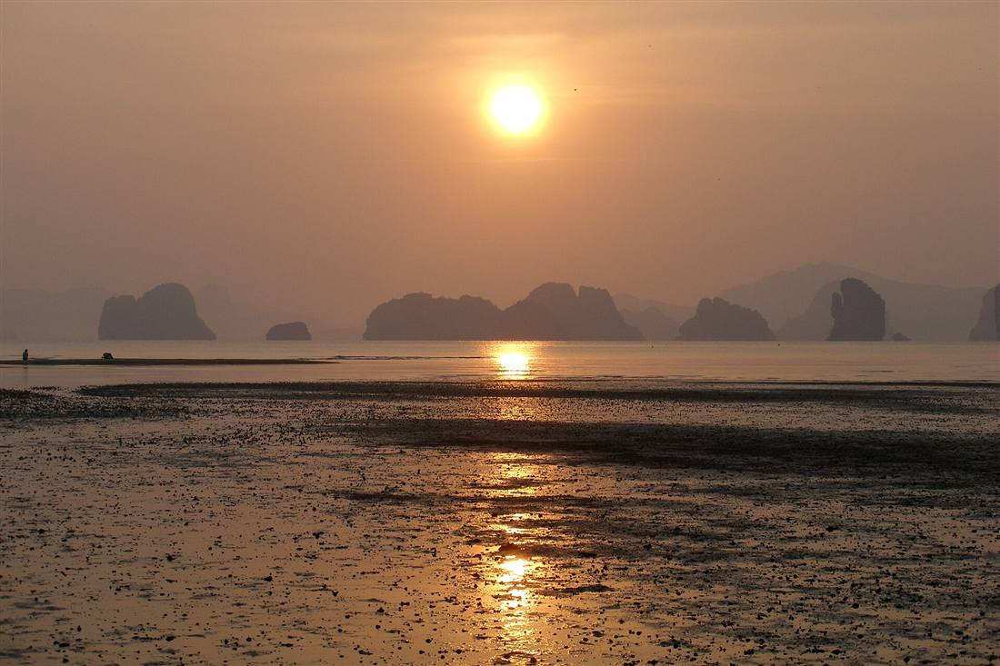

ทริปข้ามจังหวัด
รถรับส่งภูเก็ตพังงา: เส้นทาง ราคา และวิธีจอง
คู่มือครบสำหรับ รถรับส่งภูเก็ตพังงา และ รถตู้ภูเก็ตไปพังงา — อ่าวพังงา เสม็ดนางชี Khao Lak พร้อมราคาและเคล็ดลับวางแผน
22 มิถุนายน 2026
รถรับส่งภูเก็ตพังงา คืออะไร
Infinity Transport Phuket — รถรับส่งภูเก็ตไปพังงาและจังหวัดใกล้เคียง
รถรับส่งภูเก็ตพังงา คือบริการ รถรับส่งภูเก็ต ที่เชื่อมต่อระหว่างภูเก็ตกับจังหวัดพังงา โดยใช้ รถตู้ภูเก็ต พร้อมคนขับมืออาชีพ
เหมาะกับทริปวันเดียว (ไปเช้า-กลับเย็น) หรือรับส่งจากสนามบินภูเก็ตไปที่พัก Khao Lak และกลับ
จุดหมายยอดนิยมในพังงา
อ่าวพังงา + ล่องเรือคายัก
ไฮไลต์ภูเขาหินปูนและถ้ำทะเล — อ่านแผนเที่ยวที่ บทความอ่าวพังงา
เสม็ดนางชี (Samet Nangshe Viewpoint)
จุดชมวิวอ่าวพังงาแบบพาโนรามา แนะนำตื่นเช้าเพื่อแสงสวย
Khao Lak
ชายหาดยาว เงียบสงบ เหมาะพักผ่อน — ห่างจากสนามบินภูเก็ตประมาณ 1–1.5 ชั่วโมง
ท่าเรือไปสิมิลัน
รับส่งจากโรงแรมภูเก็ตไปท่าเรือหาดใน หรือท่าอื่นตามโปรแกรมดำน้ำ

อ่าวพังงา — ทริปยอดนิยมจากภูเก็ต
เส้นทางและระยะเวลาเดินทางโดยประมาณ
เส้นทาง
ระยะเวลา (โดยประมาณ)
หมายเหตุ
ภูเก็ต → อ่าวพังงา (ท่าเรือ)
1–1.5 ชั่วโมง
ขึ้นกับโซนที่พักในภูเก็ต
ภูเก็ต → เสม็ดนางชี
1.5–2 ชั่วโมง
แนะนำออกเช้ามืดถ้าดูพระอาทิตย์ขึ้น
สนามบินภูเก็ต → Khao Lak
1–1.5 ชั่วโมง
เหมาะรับจากสนามบินตรงที่พัก
ภูเก็ต → กระบี่ (ต่อ)
2.5–3.5 ชั่วโมง
ดู บทความกระบี่
แพ็กเกจรถรับส่งภูเก็ตพังงา
รับส่งเที่ยวเดียว
เช่น สนามบินภูเก็ต → Khao Lak หรือ โรงแรมภูเก็ต → ท่าเรืออ่าวพังงา
ทริปวันเดียวไป-กลับ
เหมา รถตู้ภูเก็ตรายวัน ไปอ่าวพังงา + เสม็ดนางชี แล้วกลับภูเก็ตตอนเย็น — ดูแนวทางที่ รถตู้นำเที่ยวภูเก็ต
หลายวัน
พัก Khao Lak 2–3 คืน แล้วรับกลับสนามบินภูเก็ต — แจ้งแผนล่วงหน้า
เลือกรถตามจำนวนคน: รถตู้ 9 ที่นั่ง สำหรับครอบครัว หรือ Sprinter สำหรับหมู่คณา — ดู หน้ารถทั้งหมด
ราคารถรับส่งภูเก็ตพังงา
ราคาขึ้นกับประเภทรถ ระยะทาง และรูปแบบบริการ (เที่ยวเดียว / ไป-กลับ / เหมารายวัน) ทริปข้ามจังหวัดมักมีราคาสูงกว่ารับส่งในเกาะ
ตรวจสอบแพ็กเกจที่ หน้าราคา หรือขอใบเสนอราคาตามเส้นทางที่ หน้าติดต่อ
เคล็ดลับวางทริปภูเก็ต–พังงา
ออกเช้าเพื่อหลีกเลี่ยงรถติดและได้เวลาเที่ยวเต็มที่
เสม็ดนางชีควรถึงก่อนพระอาทิตย์ขึ้น 15–30 นาที
แจ้งจุดแวะล่องเรือ/คายักล่วงหน้า เพื่อคนขับวางเวลารอ
ช่วงฝน (พ.ค.–ต.ค.) เตรียมเสื้อกันฝนและตรวจสอบสภาพอากาศ
วิธีจองรถรับส่งภูเก็ตพังงา
ระบุวันที่ จุดรับ (ภูเก็ต/สนามบิน) และจุดหมายในพังงา
แจ้งจำนวนผู้โดยสารและแพ็กเกจ (เที่ยวเดียว / ไป-กลับ / เหมาวัน)
เลือกรถจาก หน้ารถทั้งหมด
ยืนยันผ่าน หน้าจอง LINE หรือโทร 062 664 4542
Phuket to Phang Nga transfer
Infinity Transport Phuket offers Phuket to Phang Nga transfer and private van charters to Phang Nga Bay, Samet Nangshe, and Khao Lak. Book via contact page .
Book Phuket–Phang Nga transfer
จองรถไปพังงา
กลับไปหน้าบทความทั้งหมด
คำถามที่พบบ่อย (FAQ)
ภูเก็ตไปพังงา ใช้เวลานานแค่ไหน?
ขึ้นกับจุดหมาย โดยทั่วไป 1–2 ชั่วโมงจากโซนที่พักหลักในภูเก็ต
ไปเช้า-กลับเย็นในวันเดียวได้ไหม?
ได้ครับ เหมารถตู้รายวัน แวะอ่าวพังงาและจุดชมวิว แล้วกลับภูเก็ต — แนะนำออกเช้า 7:00–8:00 น.
รับจากสนามบินภูเก็ตไป Khao Lak ได้ไหม?
ได้ เป็นบริการยอดนิยม แจ้งเลขเที่ยวบินและชื่อรีสอร์ตล่วงหน้า
ค่าทางด่วนและที่จอดรถรวมไหม?
ขึ้นกับแพ็กเกจ สอบถามรายละเอียดตอนจอง